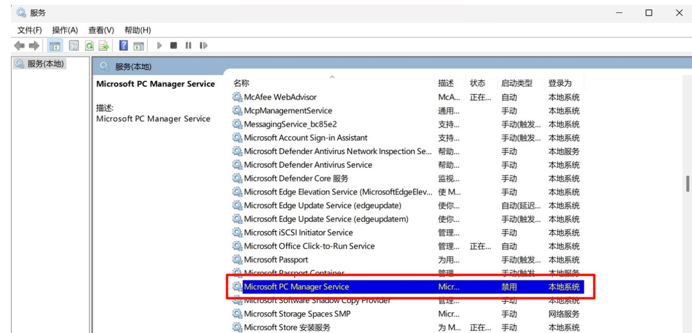

<!DOCTYPE lake>
<p data-lake-id="u9e490e7c" id="u9e490e7c"><span data-lake-id="u30ca2aa5" id="u30ca2aa5">通过以下步骤可以解决你的问题：</span></p><h2 data-lake-id="VBrps" id="VBrps"><span data-lake-id="u9bd10a7d" id="u9bd10a7d">步骤1. 终止MSPCManagerService.exe进程：</span></h2><ul list="ufafe4eab"><li data-lake-id="u482bd82c" fid="u506937e3" id="u482bd82c" style="text-align: left"><span data-lake-id="ud8b32009" id="ud8b32009">打开任务管理器</span></li><li data-lake-id="ucf71217c" fid="u506937e3" id="ucf71217c" style="text-align: left"><span data-lake-id="uc21fdfe7" id="uc21fdfe7">在"详细信息"选项卡中找到MSPCManagerService.exe</span></li><li data-lake-id="ua805b6e8" fid="u506937e3" id="ua805b6e8" style="text-align: left"><span data-lake-id="ua79dd9a3" id="ua79dd9a3">右键选择"结束任务"</span></li></ul><p data-lake-id="uf5e7578c" id="uf5e7578c"><br/></p><h2 data-lake-id="XMHsa" id="XMHsa"><span data-lake-id="uc125376a" id="uc125376a">步骤2. 禁用Microsoft PC Manager服务：</span></h2><ul list="u37005bb0"><li data-lake-id="udb7b355f" fid="u9b34a3a6" id="udb7b355f" style="text-align: left"><span data-lake-id="uf9ae07fe" id="uf9ae07fe">按下Win+R，输入services.msc打开服务管理器</span></li><li data-lake-id="u5d44a2dc" fid="u9b34a3a6" id="u5d44a2dc" style="text-align: left"><span data-lake-id="u732f5840" id="u732f5840">找到"Microsoft PC Manager"服务</span></li><li data-lake-id="ue7c672e7" fid="u9b34a3a6" id="ue7c672e7" style="text-align: left"><span data-lake-id="uf25a54f0" id="uf25a54f0">右键选择"属性"，将启动类型改为"禁用"</span></li><li data-lake-id="u34922b65" fid="u9b34a3a6" id="u34922b65" style="text-align: left"><span data-lake-id="u31da0e0b" id="u31da0e0b">点击"停止"按钮立即停止服务</span></li></ul><p data-lake-id="u9ad26f01" id="u9ad26f01" style="text-align: left"></p><h2 data-lake-id="azINe" id="azINe"><span data-lake-id="ucf171fa2" id="ucf171fa2">步骤3. 卸载Microsoft PC Manager</span></h2><ul list="u262b0380"><li data-lake-id="u491d0ae7" fid="ufc8a5105" id="u491d0ae7" style="text-align: left"><span data-lake-id="u964acea2" id="u964acea2">在Windows11的设置中，卸载Microsoft PC Manager，中文是”微软电脑管家“。</span></li></ul>